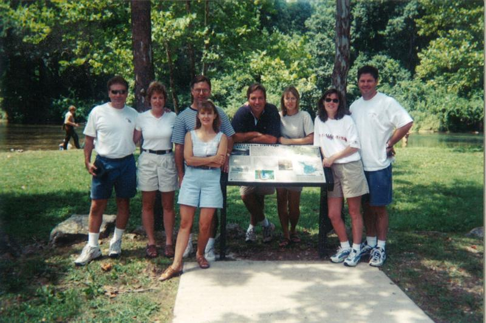

Martin Manley: My Life and Death
Born 8-15-53, Died 8-15-13 , Age 60
- Home Page
- January 1, 2012
- June 11, 2012
- Suicide Preface
- Why Suicide?
- Why not?
- Why Age 60?
- Self-Serving?
- Suicide - How 2
- Gun Control
- Other Suicides
- Other Quotes
- ------------------------------------
- Growing Up
- OMG: I look 60!
- Mom and Dad
- The Heavens
- My Religion
- Chancel Choir
- Victory O Lord
- The Proposal
- Two Marriages
- First Two Loves
- Pictures
- Trips and Travel
- Writing Fiction
- Music & Poetry
- Movies & TV
- Health
- Sleep Deprived
- Living Donor
- Food & Drink
- Creations
- Sports
- KC Star
- KC Tornado
- My IQ
- Synesthesia
- Poker
- Legal
- JOCO, Ks.
- U.S. Financial
- 911 & Conspiracies
- COOL STUFF
- Births & Deaths
Activities
I suppose "activities" could include poker and choir, but I already have categories for those two to the left, so I’ll just leave them separate. Activities in this case mostly means physical activities – although if I don’t mention that I was a former member of the Kansas Chess Association as well as the U.S Chess Federation, I won’t mention it at all.
I love to play chess, but it’s very time consuming and you either 1) have to have a person to play with or else 2) play the computer and lose. I remember getting a computer chess set from Sears in 1979. It wasn’t anything like today. It would simply flash the square the piece was on and then the square it wanted it moved to. You had to move the pieces. But, at the time it was one of the most amazing things I had ever seen. I played with it for hours and hours. I’m sure there was a relatively brief point in my life when the single “hobby” I had was playing against that computer.
It’s also true that in those days computers were not very powerful – actually unbelievably embryonic compared to today. They weren’t much more than glorified calculators. So, I could beat it, but it wasn’t long before computer chess programs could beat me. I think I lost some interest in chess after that because knowing you can always beat level X, but will always get beat by level Y kind of takes the mystery out of it. Considering it is a game of deception as much as anything else, the computer just doesn’t quite fit in.
The most athletic organized sport I ever played in junior high or later was basketball. My 7th and 8th grades were spent at a little town in western Kansas. There was only one class for 7th and one for 8th grade. I would say there were probably about 45 kids total, of which about 25 were boys (more boys than girls). About 15 of the boys went out for basketball and believe it or not, there was an “A” team and a “B” team. I played on the “B” team. The “B” team games were just one quarter of play. My greatest moment in basketball was when I once scored six points in a quarter (game), but on the other hand my worst moment was when I fouled out in about a minute and a half!
When I was growing up, I stayed overnight with a friend (Charles) and he had a ping pong table in his basement. We stayed up all night and played 50 games. I won 21 and he won 29. Charles was a year older and eventually I was able to beat him, but he was good too. In college I was one of the best ping pong players around. In fact, I hardly ever lost a series such as best two of three or three of five or whatever.
One day when I was about 24 and thought I was almost unbeatable, I went to play at a tournament in Topeka and there were three guys there that had custom cases for their stuff, special shoes and multiple paddles - just about everything you can imagine. They wiped the table with me. I don’t recall how many games I played against them, but I’m pretty sure the closest I got to beating any of them was 21-8 or something like that. Still, I really was pretty good – just not professional status. Ping pong is undoubtedly my all-time best sporting activity.
As an adult, I really didn’t get involved in any athletic events other than playing a little company softball and some basketball pickup games. However, after I met my second wife she introduced me to a number of things that were fun.
I bought a road bicycle and a dirt bicycle and began riding all the time. My wife and I would usually ride the asphalt trails – and there are a huge number of them weaving in and out of all the subdivisions in Johnson County, Kansas. I would also go dirt biking with neighbors. I did it so much that my legs started to get very muscular – especially my calves. But, after a few years, that pastime kind of dwindled. Neither of us had as much free time and so the bikes just sat. I finally sold both of mine about two months before I died.
She also introduced me to paintball. We would go out with friends to a couple different places and divide into teams and try to shoot the crap out of each other. It was super fun at first, but one day I participated in a 24-hour contest. There were about 8-10 teams and the area was about 15 acres of trees and club houses. There was also a creek that ran through it. We had two-way radios with ear phones – the works. But, the quality of the opponents was off the charts compared to us.
We were weekend warriors while some of the other guys had been doing it every day for years – were far younger, faster, better shots, better equipment. We just got murdered. Every few hours, the whole thing would start over and the end result was the same. I had so many bruises from being shot, it probably took a month for them to all go away. I only played a couple times after that. Even though I could have played with the same group where everyone was more or less equal, it wasn’t the same. I had such a miserable time in 24-hours that I couldn’t divorce myself from the experience.
We also went canoeing a number of times on rivers in Missouri with friends. It was a lot of fun, but again it was time consuming. It always meant taking 2-3 days and that meant I was away from whatever work I had going on for longer than I wanted.

The first time I went, I brought a portable B&W TV, binoculars, radio, two-way radios, camera, video camera… ONTO THE CANOE! They all laughed at me telling me I was an idiot and that they would all end up in the water and that I wouldn’t have time to utilize any of it – that I should just sit back and go with the flow and enjoy the ride.
I'm on the left with my wife Teri.
Of course, they were right that I wouldn’t have time. I didn’t use any of it. But… they were wrong about us going into the water. My wife and I were partners in the canoe. She was usually in the front while I was in the back. Everyone else tipped over at least once, but not us. In fact, all the times we went canoeing, we never tipped over a single time.
Teri was/is a very good bowler – much better than me. We were in bowling leagues for all the years we were married. I pretty much always stayed around 150 average while she was usually challenging for the best average among women in the league at 170ish. I think her personal best game is around 246 and series 650. My personal best is 228 and 580.
I really enjoyed bowling, however when I built the playground (see category to left) and built a shed addition onto the house and a few other construction projects, I was old enough by then that I put too much strain on my wrists and they always hurt. When bowling, you have to spin the ball and that puts even more pressure on the wrist (my right wrist). Even with a wrist brace, I couldn’t keep it from hurting. After we divorced, I don’t think I bowled more than one or two more times.
I always assumed that my constant typing was probably also hard on my wrists, but when I was no longer doing a lot of physical activities (especially construction), my wrists were fine. When I think about how many keystrokes I have done in the last 10 years it’s got to be in the tens of millions and yet my wrists feel perfectly fine.
We also joined with some friends and created a team to compete in barbeque contests. Kansas City is well known for its BBQ and there were lots and lots of teams as well as lots of contests. We did that for a few years, but eventually we all kind of mutually agreed that it had run its course. The problem with it usually was that the contests were during July and August and it was brutally hot which took a lot of the fun out of it.
By the way, if an NBA team ever moves to Kansas City, I’ve decided they should be called the Kansas City BBQs – where BB is short for both BarBe… que as well as BasketBall. And, of course, just as the Minnesota Timberwolves are called the “Wolves” and the Portland Trail Blazers are called the “Blazers” and the Philadelphia 76ers are shortened to the “Sixers”, etc… Kansas City’s team would just be called the “Q’s” – not to be confused with the “Cuse” which is short for the Syracuse University Orangemen. Remember, you heard it hear first.
It’s probably a good place to reiterate how much my life changed when I moved to Johnson County, Kansas and dated/married my second wife. Not only did I have two young stepdaughters, but I was involved in so many new things – church choir, BBQ team, canoeing, biking, bowling and paintball. Teri even got me to listen to new music and read a couple novels!
Copyright 2013 Martin Manley Life and Death. All rights reserved.